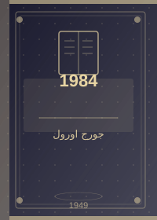
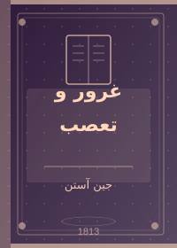
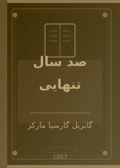
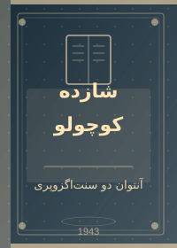
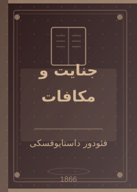
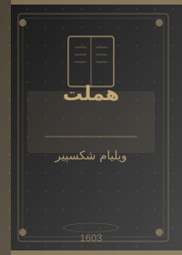
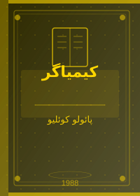
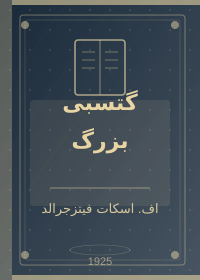
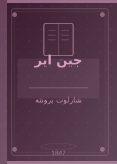
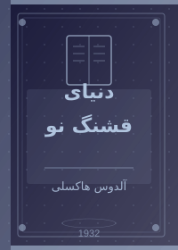

ادبیات جهانی چیست؟
ادبیات جهانی به آثاری گفته میشود که از محدوده فرهنگ و زبان مادری خود فراتر رفته و برای همه انسانها در همه زمانها معنادار هستند. این آثار درباره موضوعاتی سخن میگویند که مرز و زبان نمیشناسند: عشق، مرگ، آزادی، عدالت و معنای زندگی.
«ادبیات جهانی آینهای است که ملتها در آن یکدیگر را میبینند و پی میبرند که مشترکات انسانیشان بسیار بیشتر از اختلافاتشان است.» — گوته، درباره ادبیات جهانی
📖 پنج اثر جاودانه

۱۹۸۴ (Nineteen Eighty-Four)
در جهانی که برادر بزرگ همه را زیر نظر دارد، وینستون اسمیت در اداره حقیقت کار میکند و تاریخ را بازنویسی میکند. او عاشق میشود و دست به شورش میزند.
جنگ صلح است. آزادی بردگی است. جهل قدرت است.
این شعارهای حزب در رمان اورول، هنوز هم طنین دارد.
چرا بخوانیم؟ برای فهمیدن خطر تمامیتخواهی، دروغ رسمی و کنترل اطلاعات — موضوعاتی که هرگز کهنه نمیشوند.

غرور و تعصب (Pride and Prejudice)
الیزابت بنت دختری باهوش و مستقل است که در برابر آقای دارسی — مردی مغرور و ثروتمند — تعصب نشان میدهد. اما آیا این تعصب پایدار میماند؟
جین آستن در این رمان با زبانی شیرین و کنایی، جامعه انگلستان قرن نوزدهم را به نقد میکشد. رمانی که دویست سال است خوانده میشود.

صد سال تنهایی (Cien años de soledad)
حکایت هفت نسل از خانواده بوئندیا در شهر افسانهای ماکوندو. مارکز در این رمان واقعیت و جادو را آنقدر در هم میآمیزد که نمیتوان مرز آنها را تشخیص داد.
سالها بعد، در برابر جوخه اعدام، سرهنگ آئورلیانو بوئندیا
به یاد آن بعدازظهر دور خواهد افتاد که پدرش او را برد تا یخ ببیند.
این رمان در ۱۹۸۲ جایزه نوبل ادبیات را برای مارکز به ارمغان آورد.

شازده کوچولو (Le Petit Prince)
پسر کوچکی از سیارهای دیگر به زمین میرسد و با یک خلبان دوست میشود. درباره دوستی، عشق، مسئولیت و از دست دادن حرف میزند.
«آنچه مهم است با چشم دیده نمیشود. فقط با دل میتوان درست دید.» این جمله سادهترین و عمیقترین حکمت در تاریخ ادبیات است.
شازده کوچولو پرفروشترین کتاب ترجمهشده جهان پس از کتاب مقدس است.

جنایت و مکافات (Crime and Punishment)
راسکولنیکف، دانشجویی فقیر و نابغه، به این نتیجه میرسد که برخی انسانها فراتر از قانون هستند. یک پیرزن رباخوار را میکشد و بعد با وجدانش مقابله میکند.
داستایوفسکی در این رمان یک داستان جنایی ساده نمینویسد،
بلکه کاوشی عمیق در روح بشر ارائه میدهد.
رمانی که روانشناسی مدرن از آن بسیار آموخته است.
📸 نگاهی به دیگر آثار جهانی





📌 فهرست کتابهای پیشنهادی
ترتیب پیشنهادی خواندن (از ساده به پیچیده):
- شازده کوچولو — آستانه ورود به ادبیات کلاسیک
- کیمیاگر — سفر استعاری و روان
- غرور و تعصب — رمان عاشقانه کلاسیک
- ۱۹۸۴ — دیستوپیای تأثیرگذار
- جنایت و مکافات — روانشناسی عمیق
- صد سال تنهایی — رئالیسم جادویی پیچیده
کتابها بر اساس زبان اصلی:
- انگلیسی: هملت، غرور و تعصب، ۱۹۸۴، گتسبی بزرگ، جین ایر، دنیای قشنگ نو
- فرانسوی: شازده کوچولو
- اسپانیایی: صد سال تنهایی، کیمیاگر
- روسی: جنایت و مکافات
برندگان جایزه نوبل ادبیات در این فهرست:
- گابریل گارسیا مارکز — ۱۹۸۲
📊 جدول مقایسهای کتابهای جهانی
| نام کتاب | نویسنده | کشور | قرن | موضوع اصلی | دشواری خواندن | جایزه ادبی |
|---|---|---|---|---|---|---|
| شازده کوچولو | سنتاگزوپری | فرانسه | ۲۰ | دوستی، معنا | آسان | — |
| ۱۹۸۴ | جورج اورول | انگلستان | ۲۰ | آزادی، قدرت | متوسط | — |
| غرور و تعصب | جین آستن | انگلستان | ۱۹ | عشق، جامعه | متوسط | — |
| صد سال تنهایی | گارسیا مارکز | کلمبیا | ۲۰ | تنهایی، زمان | دشوار | نوبل ۱۹۸۲ |
| جنایت و مکافات | داستایوفسکی | روسیه | ۱۹ | گناه، ایمان | دشوار | — |
| هملت | شکسپیر | انگلستان | ۱۷ | انتقام، مرگ | دشوار | — |
| کیمیاگر | پائولو کوئلیو | برزیل | ۲۰ | رویا، سفر | آسان | — |
| دشواری خواندن بر اساس سبک نگارش و پیچیدگی محتوا تعیین شده است. | ||||||